How do I change the trigger?
Delete the trigger, and choose a new trigger.
Where should I initialize my variables?
Just after your trigger.
How do I initialize an array?
["a","b","c"]
Dates must start in ISO8601 format, i.e. yyyy/MM/ddTHH:mm
From there, you can use formatDateTime to get any format you want
formatDateTime('2022-02-28T15:30','yyyy-MM-ddTHH:mm')
At this point in time, it is not known how to display the timezone as UTC+8:00 other than just doing string concat.
concat(outputs('Compose'),'+08:00')
ODATA query does not support space in the search field (e.g. Full Name)
Lookup
length(outputs('List_rows_present_in_a_table')?['body/value'])ODATA query support spaces in the search field (e.g. Full Name is Full_x0020_Name)
Use a Flow to query the SharePoint list and inspect the output to see the field names.
The internal name is created at the point the SharePoint list is created
Default limit on return count
SharePoint lists have a default maximum return count of 100. For larger lists, set the Top Count value to a higher value (maximum is 5000).
https://www.tachytelic.net/2020/04/get-more-5000-items-sharepoint-power-automate/
ODATA query for Yes / No
Based on this article, 1 is true and 'No' is false
Filter query for Person column in Sharepoint
staffName/EMail eq 'staffname@yourdomain.com'
List of formulas supported by SharePoint List
All returned values are in String.
To convert to int, use the expression int(x)
To convert to float, use the expression float(x)
To convert to date, use the expression formatDateTime(x, 'dd-MM-yyyy')
To convert data to ISO 8601 formatDateTime(x, 'yyyy-MM-dd')
Date and time format strings
https://docs.microsoft.com/en-us/dotnet/standard/base-types/custom-date-and-time-format-strings
https://docs.microsoft.com/en-us/power-automate/data-operations
To get the unique values from an array x, use the expression intersection(x, x)
https://docs.microsoft.com/en-us/power-automate/use-expressions-in-conditions
@and(equals(item()?['Status'], 'blocked'), equals(item()?['Assigned'], 'John Wonder'))
@and(empty(item()?['Status']), empty(item()?['Assigned']))
https://docs.microsoft.com/en-us/azure/logic-apps/workflow-definition-language-functions-reference
Inserting dates
MM/dd/yy HH:mm (follow the format that Excel requires)Retrieving dates
Approach #1 - Comparing date time values
yyyy-MM-ddTHH:mm:ssutcNow() to Singapore time then compare this with the Excel value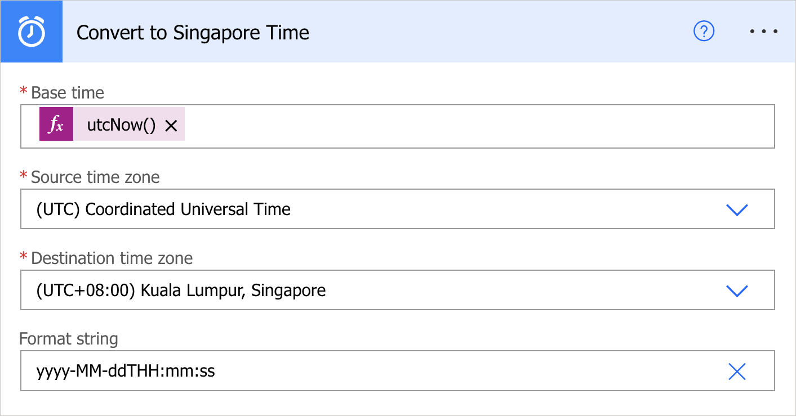
Approach #2 - Comparing date time values
yyyy-MM-ddTHH:mm:ssutcNow()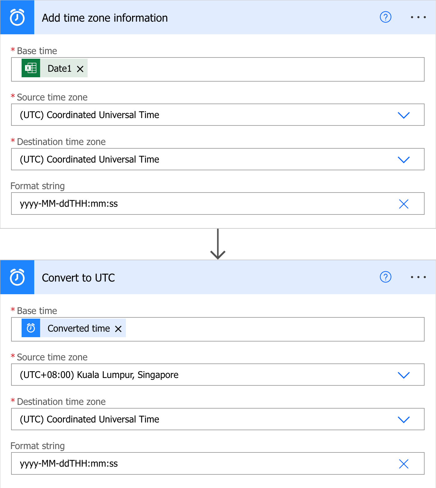
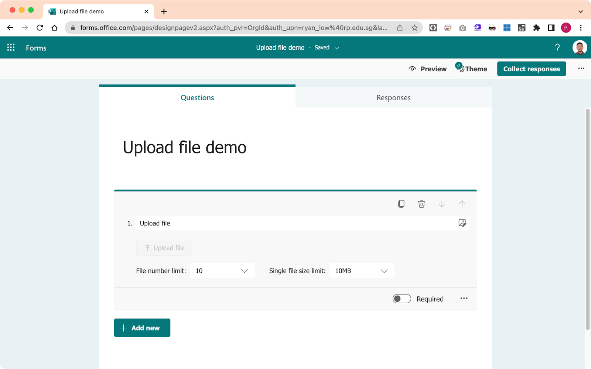
{
"type": "array",
"items": {
"type": "object",
"properties": {
"name": {
"type": "string"
},
"link": {
"type": "string"
},
"id": {
"type": "string"
},
"type": {},
"size": {
"type": "integer"
},
"referenceId": {
"type": "string"
},
"driveId": {
"type": "string"
},
"status": {
"type": "integer"
},
"uploadSessionUrl": {}
},
"required": [
"name",
"link",
"id",
"type",
"size",
"referenceId",
"driveId",
"status",
"uploadSessionUrl"
]
}
}Body field from the Parse JSON action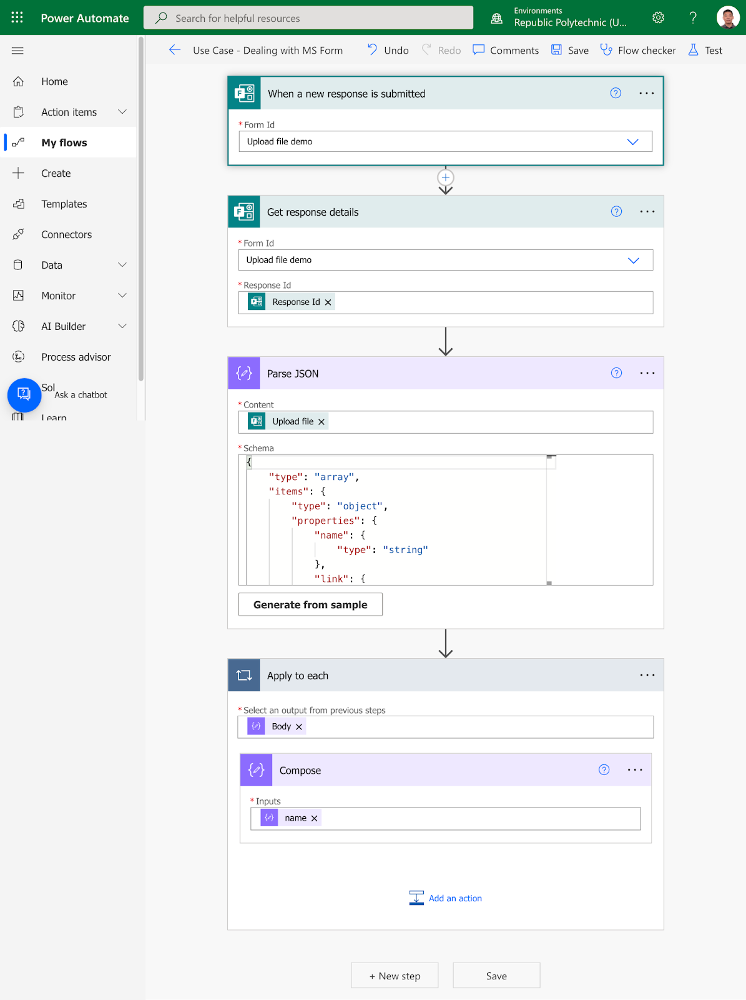
Field | Description |
name | Attachment name |
link | URL to attachment |
id | File id |
size | File size |
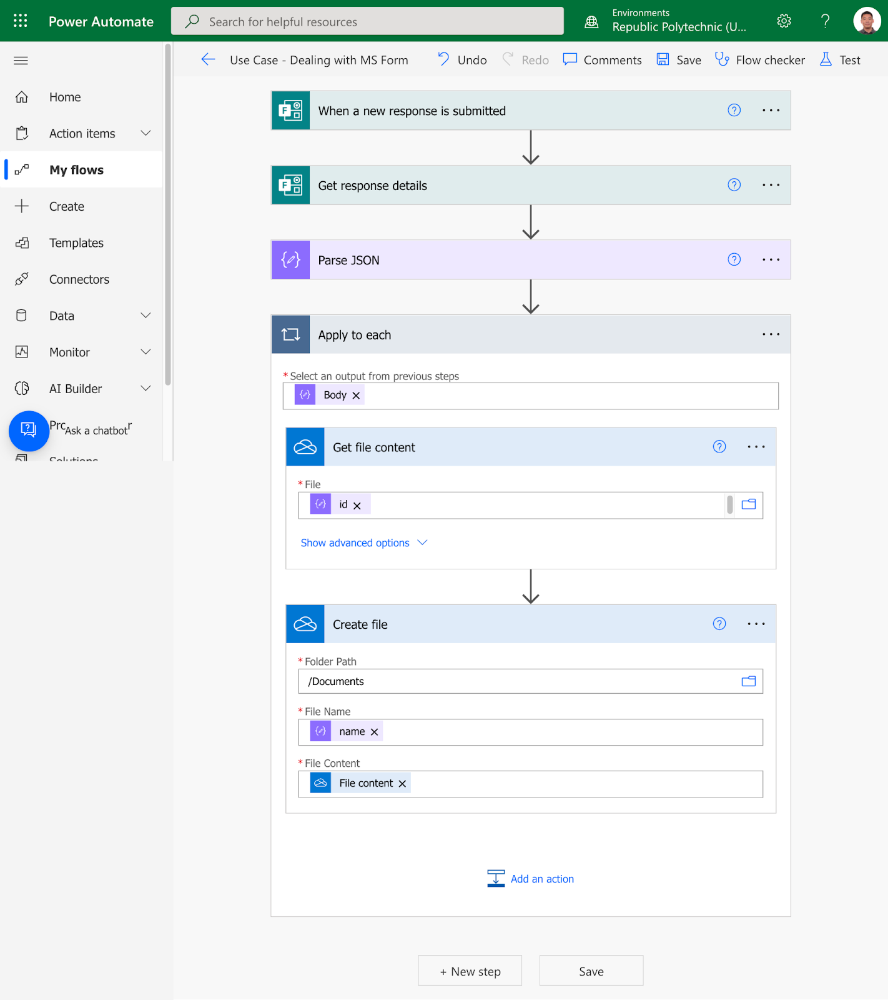
https://tomriha.com/power-automate-filter-on-sharepoint-lookup-column/
Lookup List
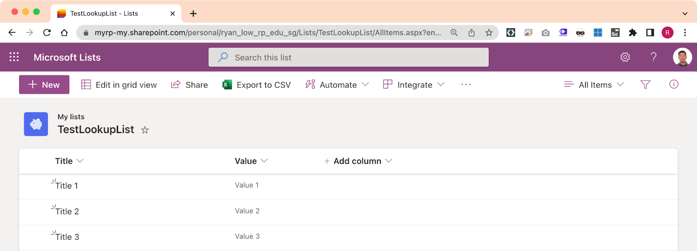
List which uses a lookup
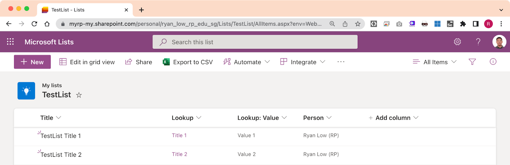
SharePoint List filter query on lookup field
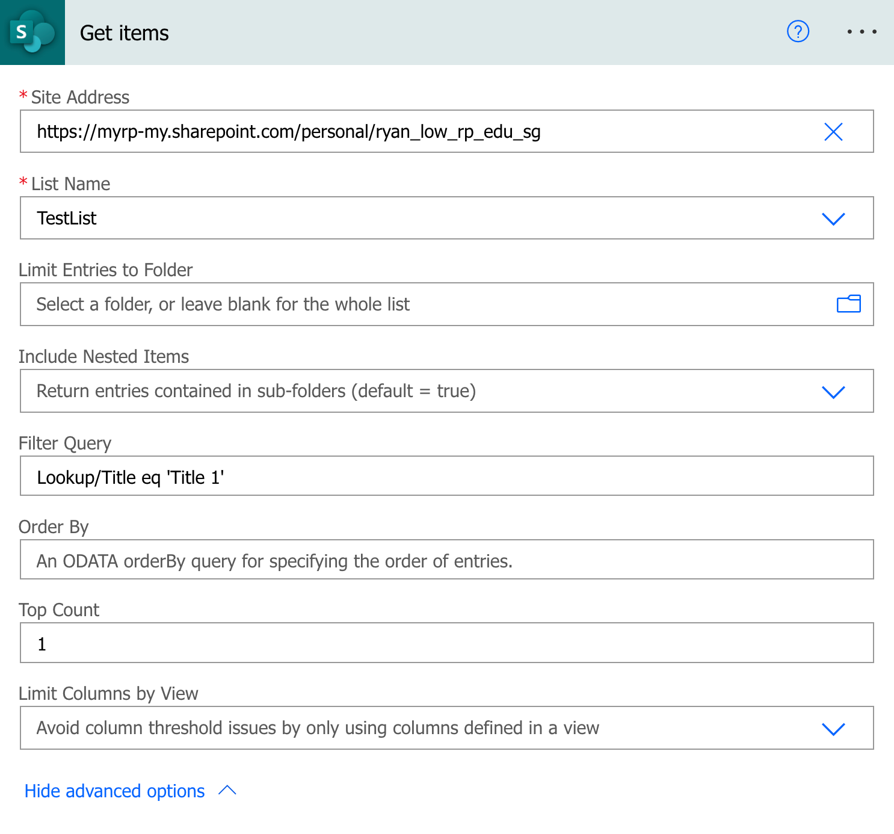
Lookup List
List which uses a lookup
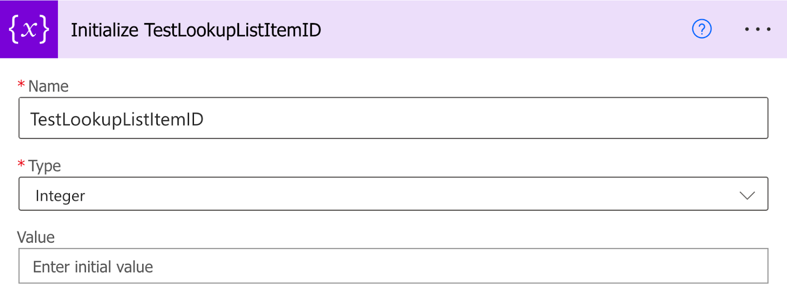
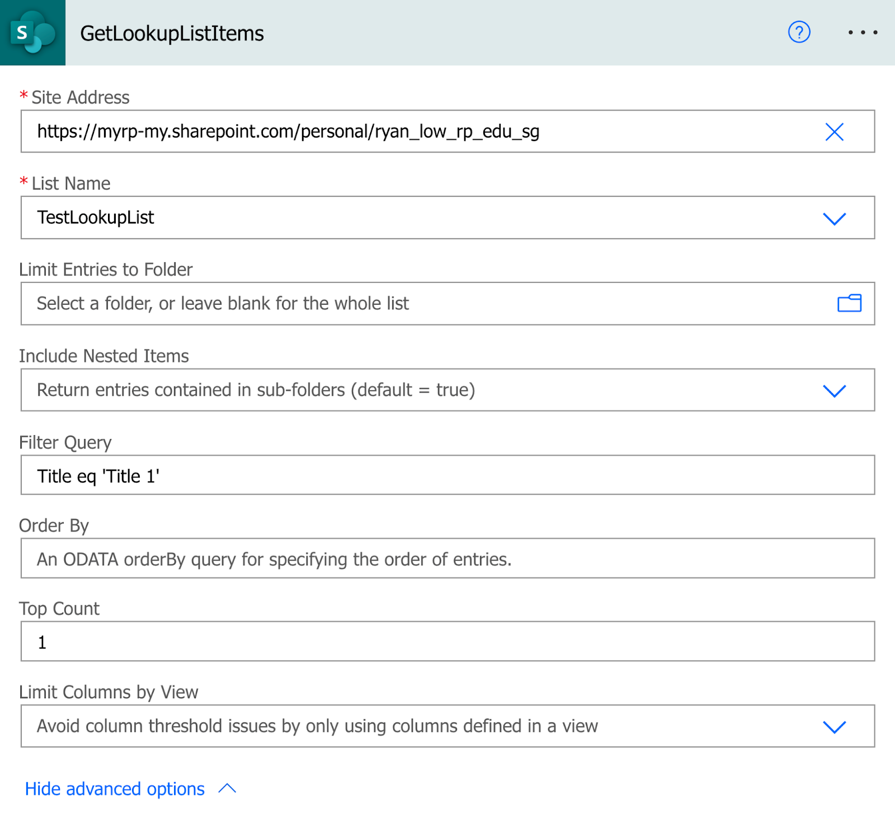
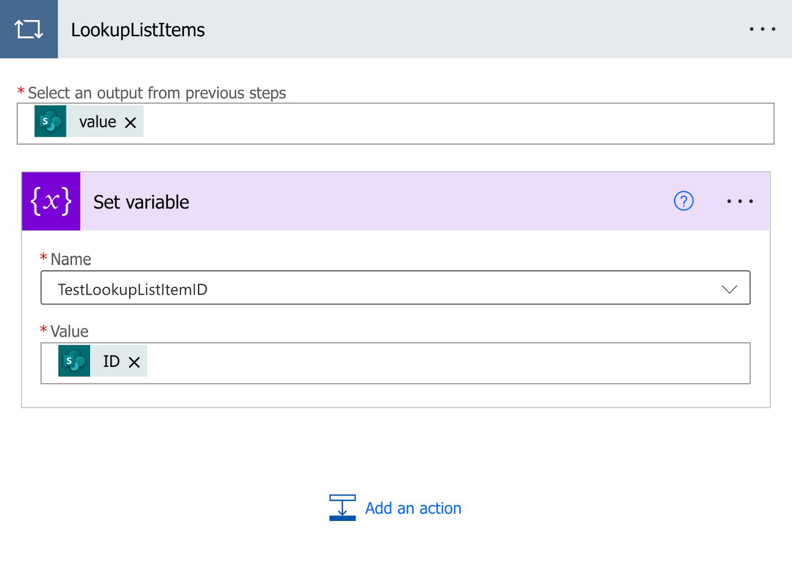
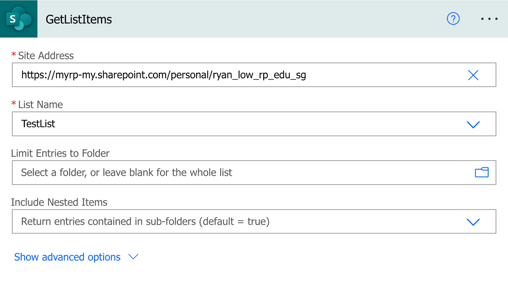
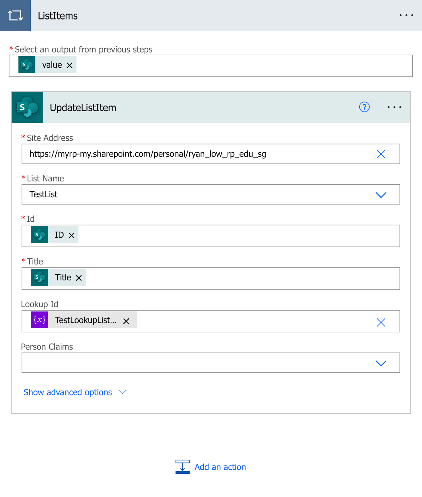